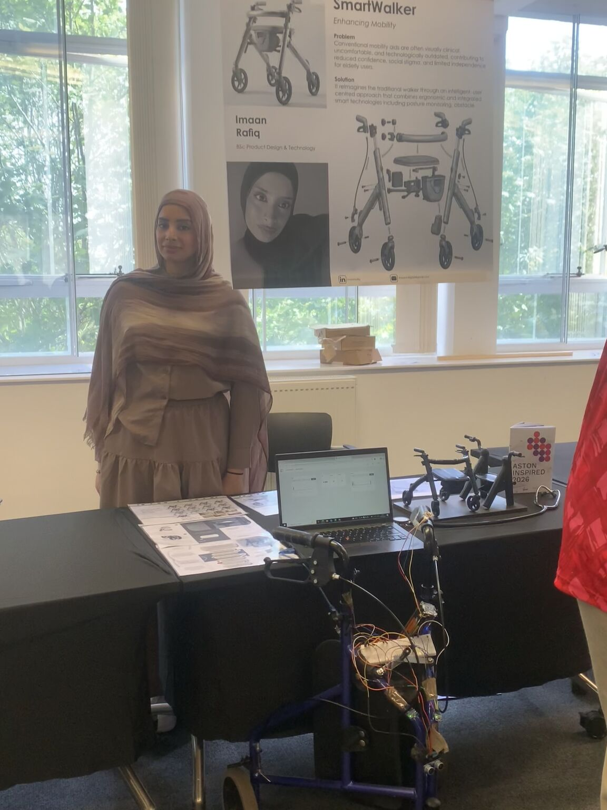

Archive › Final year project
SmartWalker
Enhancing independent mobility
James Dyson Award 2026 entry
Overview
An intelligent rollator that monitors posture, detects obstacles, analyses gait and calls for help if the user falls — designed to be affordable as well as clever.
Conventional mobility aids are often visually clinical, uncomfortable and technologically outdated, which contributes to reduced confidence, social stigma and limited independence for elderly users. The SmartWalker started as a simple question: what if a mobility aid actually worked for the person using it? Not just something to lean on, but something intelligent.
I built the working prototype from scratch — user research, mechanical CAD, electronics, sensor fusion, FEA validation, a commercial BOM and a 12-section technical report. It has since been submitted to the 2026 James Dyson Award.
The problem
Conventional mobility aids are visually clinical, uncomfortable and technologically outdated — contributing to reduced confidence, social stigma and limited independence for elderly users.
The solution
A reimagined walker that combines ergonomic form with integrated smart technology: posture monitoring, obstacle detection, AI-assisted gait analysis, and emergency alerting — all in a lightweight, elegant package.
Engineering the intelligence
The firmware graduated from a basic benchtop test on an Arduino Uno to a production-ready ESP32-S3. The 8-bit Uno proved the core logic, but crunching sensor fusion across multiple I2C devices pushed it to its limit.
Moving to the 32-bit dual-core chip changed the game. High-frequency IMU polling could be offloaded to one core while emergency braking and buzzer logic stayed entirely on the other, with real multithreading and far more headroom for advanced filtering.
- LiDAR and ultrasonic obstacle detection
- IMU-based posture and fall monitoring
- AI-assisted gait analysis
- Bluetooth / 4G emergency alerting with SMS
- Haptic and audio feedback
- Hybrid regenerative wheels assist braking and walking over uneven ground
Designed for more than one income
One thing I felt strongly about from the start: this should not be a product only wealthy people can access. Mobility issues do not discriminate by income, so the design split into two concepts.
The premium tier includes hybrid regenerative wheels that assist braking and walking over uneven ground. The affordable tier strips back to the core safety technology — fall detection, obstacle awareness, emergency alerts — so the people who need it most can actually get it.
I believe it is ethically wrong to design assistive technology for one sector of society and ignore everyone else.
Outcome
The walker supports users up to 130 kg, maintains a total weight below 6.5 kg, and allows continuous operation for 8 hours per battery cycle. Electronics and sensor modules were packaged carefully to provide real-time posture monitoring without significantly increasing weight.
Gallery